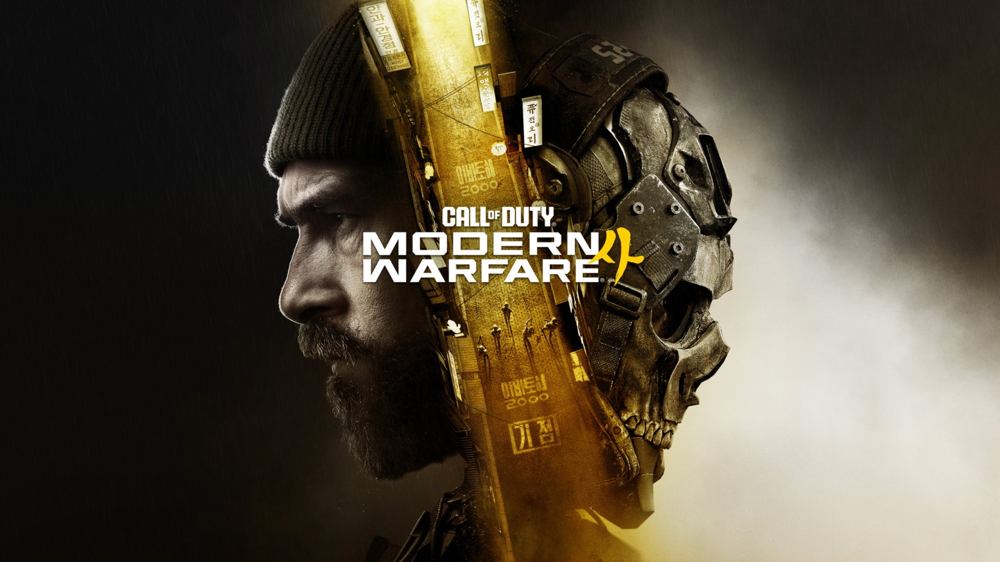

20 Years of Call of Duty!
I’ve been a gamer since I was a little girl, probably around the age of seven or eight, when I first discovered my love for gaming.
I found this passion one day while visiting my grandparents. I happened to peek inside my aunt’s closet—she still lived at home at the time—and spotted what I thought was a toy gun. The only thing that confused me was that it had cables attached to it! Curious, I asked her what it was, and she told me it was a game that I could plug into the TV.
So, I plugged it in, picked up the gun, and before I knew it, I was shooting ducks on the TV screen. I was hooked!
From that moment on, I started playing all kinds of video games. However, Call of Duty has become one of my favorite shooter franchises of all time. Even though I still have my fair share of rage moments, I always find myself buying and playing the latest release for an unhealthy number of hours. Haha!
Twenty years of Call of Duty, and I’m still here, controller in hand, ready for the next match!
| Game Title |
Year |
Gaming Device |
|---|
| Call of Duty | 2003 | PC |
| Call of Duty 2 | 2005 | PC, Xbox 360 |
| Call of Duty 3 | 2006 | PS2, Xbox, PS3, Xbox 360, Wii |
| Call of Duty 4: Modern Warfare | 2007 | PC, PS3, Xbox 360 |
| Call of Duty: World at War | 2008 | PC, PS3, Xbox 360, Wii |
| Call of Duty: Modern Warfare 2 | 2009 | PC, PS3, Xbox 360 |
| Call of Duty: Black Ops | 2010 | PC, PS3, Xbox 360, Wii |
| Call of Duty: Modern Warfare 3 | 2011 | PC, PS3, Xbox 360, Wii |
| Call of Duty: Black Ops II | 2012 | PC, PS3, Xbox 360, Wii U |
| Call of Duty: Ghosts | 2013 | PC, PS3, PS4, Xbox 360, Xbox One, Wii U |
| Call of Duty: Advanced Warfare | 2014 | PC, PS3, PS4, Xbox 360, Xbox One |
| Call of Duty: Black Ops III | 2015 | PC, PS3, PS4, Xbox 360, Xbox One |
| Call of Duty: Infinite Warfare | 2016 | PC, PS4, Xbox One |
| Call of Duty: WWII | 2017 | PC, PS4, Xbox One |
| Call of Duty: Black Ops 4 | 2018 | PC, PS4, Xbox One |
| Call of Duty: Modern Warfare | 2019 | PC, PS4, Xbox One |
| Call of Duty: Black Ops Cold War | 2020 | PC, PS4, PS5, Xbox One, Xbox Series X/S |
| Call of Duty: Vanguard | 2021 | PC, PS4, PS5, Xbox One, Xbox Series X/S |
| Call of Duty: Modern Warfare II | 2022 | PC, PS4, PS5, Xbox One, Xbox Series X/S |
| Call of Duty: Modern Warfare III | 2023 | PC, PS4, PS5, Xbox One, Xbox Series X/S |
| Call of Duty: Black Ops 6 | 2024 | PC, PS4, PS5, Xbox One, Xbox Series X/S |
| Call of Duty: Black Ops 7 | 2025 | PC, PS4, PS5, Xbox One, Xbox Series X/S |
| Call of Duty: Modern Warfare 4 | 2026 | PC, PS5, Xbox Series X/S, Nintendo Switch |
I was working at my first “real” job at a pizza restaurant called Tony’s, where I worked as a hostess and waitress. I was saving every penny I could to buy a PS3, and when the release day finally arrived, I camped out in front of my local Best Buy with a mini backpack full of tip money, determined to get my hands on one.
The only problem? I could afford the PlayStation and a controller, but I didn’t have enough money left over to buy a game. At that point, I was just happy to secure the console!
The next day, one of my wonderful aunts heard that I had camped out for a PS3 but hadn’t been able to afford a game. Out of the kindness of her heart, she showed up with a copy of Call of Duty: World at War.
And just like that, it all began! What started with one thoughtful act of kindness turned into a love for the Call of Duty franchise that has lasted for years. I’ve been playing the series ever since, and I still have my aunt to thank for helping kick-start one of my favorite gaming traditions.
